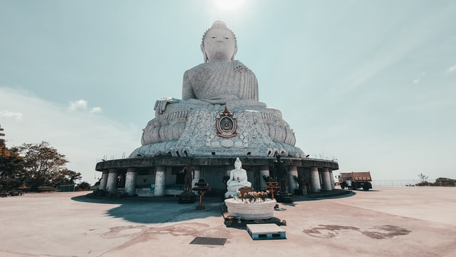

17.02.2021
Thaimaan lomakohteet – 7 suosituinta lomakohdetta
Onko mielessä rentouttava matka eksoottiseen Thaimaan lämpöön, mutta vain sopiva matkakohde puuttuu? Tässä artikkelissa esittelyssä parhaat Thaimaan lomakohteet.
Thaimaan lomakohteet – Top 7
Thaimaa on maa, josta löytyy satoja, toinen toistaan parempia lomakohteita. Tähän listaan keräsin kuitenkin vain ne tärkeimmät kaupungit, joiden avulla ymmärrät paremmin, millaisia lomakohteita Thaimaasta tarkalleen ottaen löytyy.
1. Bangkok

Thaimaan pääkaupunki Bangkok on useille Thaimaan matkailijoille ensikosketus Thaimaahan. Nopealla vilkaisulla Bangkok saattaa vaikuttaa betoniviidakolta ja puuduttavan tylsältä lomakohteelta. Todellisuudessa näin ei kuitenkaan ole.
Vastakohtien kaupungiksi kutsutusta Bangkokista löydät vanhaa ja perinteistä thaimaalaista kulttuuria sekö moderneja pilvenpiirtäjiä.
Rantoja Bangkokista ei löydy, mutta kaupungissa on satoja hulppeita hotelleja ja kylpylöitä uima-altaineen.
Lyhykäisyydessään Bangkokin voi tiivistää näin: Ihmettele, syö ja nauti.
Jos Thaimaan lomalla haluaa tehdä muutakin kuin löhöillä rannalla, on ehdottoman suositeltavaa sisällyttää lomaan myös muutama päivä Bangkokissa.
2. Pattaya
Bangkokin eteläpuolella sijaitseva pahamainen Pattaya on yksi Thaimaan suosituimpia rantakohteita – osittain sen takia että Pattaya sijaitsee vain muutaman tunnin ajomatkan päästä maan pääkaupungista.
Vaikka Pattayalla onkin hieman kyseenalainen maine, se on silti edullinen ja erinomainen lomakohde myös lapsiperheille.
Pattaya tarjoaa edullista majoittautumista ja rantoja, joiden puhtauteen on viimevuosina panostettu merkittävästi.
Jos olet sinkku tai mielessä on hakea vaimo Thaimaasta, suuntaa Pattayalle!
3. Phuket
Thaimaan suosituin saari, Phuket on kunnon turistirysä, josta löytyy kuitenkin jokaiselle jotakin.
Vaikka Phuketin saarella vierailee vuosittain miljoonia turisteja, löytyy sieltä silti myös hiljaisia ja rauhallisia rantoja.
Phuketin suosituimmat rannat sijaitsevat saaren eteläpuolella, paikat kuten Patong Beach ja Phuket Town tulevat varmasti tutuiksi. Saaren pohjoisosaan sen sijaan vain harva turisti eksyy.
Rannalla löhöily on Phuketin suosituin aktiviteetti, mutta sen lisäksi on suositeltavaa varata myös päiväretkiä lähisaarille.
Hintatasoltaan Phuket on hieman muuta maata kalliimpi. Suosittelen Phuketia ensikertaa Thaimaassa vieraileville, joilla on mielessä erityisesti rannalla löhöily. Helsingistä lennetään myös sesongin aikana suoria lentoja Phuketiin.
4. Krabi
Parin sadan kilometrin päässä Phuketista sijaitseva Krabi on erityisesti Ruotsalaisten turistien suosiossa. Turistien määrässä Krabi on kuitenkin main marginaalisesti Phuketia pienempi.
Krabista löydät suomea puhuvia räätäleitä, rantoja sekä mielenkiintoisia lähisaaria.
Jos lomalla on aikaa, voit helposti yhdistää samaan matkaan Phuketin sekä Krabin. Kohteiden välillä on bussi, lento ja veneyhteydet.
Kenelle? Krabi sopii ensikertaa Thaimaahan matkaaville, jotka kaipaavat erityisesti rantaa ja auringonpaistetta. Finnair lentää myös krabille suoria lentoja.
5. Koh Samui
Thaimaan saaret ovat suosittuja lomakohteita. Eritysesti Thaimaan kolmanneksi suurin saari – Koh Samui.
Thaimaan Ibizanakin tunnettu Koh Samui ei suinkaan ole mikään rento lomakohde, vaan kunnon bilesaari.
Hintatasoltaan Koh Samuin saari ei myöskään ole halvimmasta päästää, pelkästään majoitukseen tulee uppoamaan sievoinen summa rahaa.
Kenelle Koh Samui sitten sopii? Yöelämää etsiville bilettäjille. Saaren korkean hintatason vuoksi se ei kuitenkaan välttämättä sovi bileitä etsivälle reppureissaajalle.
6. Koh Phangan
Rauhallisena hippisaarena tunnettu Koh Phangan on rauhan tyyssija. Tämä saari sopii erityisesti rauhaa hakeville reppureissaajille.
Ihan täysin rauhallinen saari ei kuitenkaan ole, sillä sen suurin vetonaula on niin sanotut ”Full moon” rantabileet bileet jossa voit ihastella paikallisten järjestämiä, vaikuttavia tulishowta.
Bilettämisen lisäksi saarelle suuntaavat surffauksesta, sukeltamisesta ja snorklaamisesta kiinnostuneet. Saaren vedenalainen maailma on näkemisen arvoinen!
Kenelle? tämä Thaimaan lomakohde sopii rauhaa ja bileitä hakevalle reppureissaajalle. Itse en viettäisi saarella viikkokausia, vaan suosittelen sen yhdistämistä muihin lähellä sijaitseviin saariin.
7. Chiang Mai
Chiang Mai on pohjois-Thaimaan suurin kaupunki, joka tunnetaan erityisesti rennosta ilmapiiristä ja edullisesta hintatasosta.
Chiang Mai sopii autenttista Thaimaa-kokemusta etsivälle. Kaupungista löytyy kymmeniä vanhoja temppeleitä sekä herkullista Thaimaalaista ruokaa.
Vaikka kaupunki on rauhallinen, niin mikään turistiton lomakohde se ei ole, nimittäin Chiang Mai on yksi suosituimpia kaupunkeja Thaimaassa asuvien länsimaalaisten expattien keskuudessa.
Chiang Mai sopii myös hyvin tukikohdaksi lähialueen matkailuun, suosittuja kohteita ovat mm. valkoisesta temppelistä tunnettu Chiang Rai sekä rauhan tyyssija Pai.
Jos Thaimaan kaupungit kiinnostaa, suuntaa ensin Bangkokiin, josta lähdet junalla kohti pohjoista.
Thaimaa lomakohteet yhteenveto
Kuten varmaan huomasitkin, Thaimaan lomakohteet eroavat merkittävästi toisistaan – on isoja kaupunkeja, rantaa sekä saaria.
Thaimaan lomakohdetta valitessa kannattaa miettiä, mitä lomalta todellakin haluaa. Autenttista kulttuuria hakevan ei kannatta suunnata Phuketin turistirysään vaan hiljaisemmille saarille.
Kaikkia mukavuuksia ja länsimaalaista ruokaa etsivän ei kannata myöskään lähteä seikkailemaan hiljaisempiin lomakohteisiin, jossa turismi-infra ei ole vielä tarpeeksi kehittynyt.
Kaikki yllä olevan listan lomakohteet sopivat varmasti ensikertalaiselle, sillä niiden turismi on riittävän kehittynyt mukavuudenhaluisemmankin matkaajan tarpeisiin.